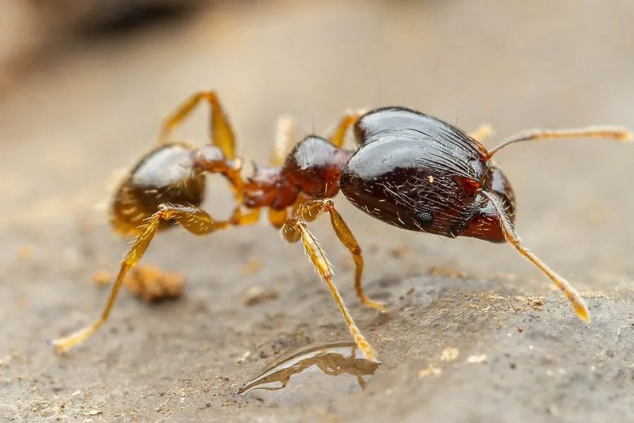

昆虫 · 动物界
大头蚁 Pheidole megacephala

工蚁分大小两型、兵蚁头部特别大的入侵蚂蚁，原产非洲，扩散全球热带地区，对本地昆虫和生态造成威胁。
- 分类
- 门节肢动物门纲昆虫纲目膜翅目科蚁科属大头蚁属
- 栖息环境
- 热带和亚热带城市、花园、农田，土中或缝隙筑巢
- 地理分布
- 原产非洲，现扩散至全球热带和亚热带地区
- 保护级别
- 暂无评估；世界百大入侵物种之一
物种志
大头蚁工蚁分小型工蚁和大型兵蚁两型：小型工蚁体长约 1.5–2 mm，体黄褐至红褐色；兵蚁头部巨大，体长约 3–4 mm，上颚发达，用于防卫和咬碎种子。蚁后体型较大，腹部饱满。
它原产于非洲南部，随贸易和航运扩散到全球热带和亚热带地区，被列为世界百大入侵物种。大头蚁食性杂，取食昆虫、种子、蜜露和腐肉，群体数量大，会排挤本地蚂蚁和其他无脊椎动物，还会保护蚜虫和介壳虫，对农业和生态造成影响。它常在土中、石缝和建筑缝隙中筑巢，在室内也会出现在厨房和花园。防治以毒饵诱杀、清洁环境和防止传播为主，发现入侵时应及时处理。
形态与习性
- 食性杂食，取食昆虫、种子、蜜露和腐肉
- 体长小型工蚁约 1.5–2 mm，兵蚁约 3–4 mm
- 识别兵蚁头部特别大，上颚发达
- 入侵性排挤本地蚂蚁，保护蚜虫和介壳虫
- 防治毒饵诱杀、清洁环境和防止人为传播
趣味知识
- 大头蚁的兵蚁头部特别大，看起来像另一个物种。
- 它被列为世界百大入侵物种，扩散到全球热带地区。
- 大头蚁会保护蚜虫和介壳虫，间接危害农作物。